www.spetsialist-mx.ru
САЙТ О ПК "СПЕЦИАЛИСТ" И ЕГО КЛОНАХ
| |
|
| ГЛАВНАЯ | |
| ЛИК | |
| ЛИНЁВСКИЙ | |
| СПЕЦИАЛИСТ-М | |
| СЯБР | |
| УЦА | |
| ЭКСПРЕСС | |
| ЭРИК | |
| СПЕЦИАЛИСТ МХ | |
| ДРУГИЕ | |
| ССЫЛКИ | |
| ОБРАТНАЯ СВЯЗЬ |
ПК "СПЕЦИАЛИСТ - М"
Технические характеристики. Прежде всего отметим конструктивные отличия данной машины по сравнению с базовой: уменьшение размеров печатной платы, упрощение её топологии за счёт применения в ОЗУ восьми микросхем КР565РУ5; использование шести ППЗУ (стартовое ППЗУ, ППЗУ Монитора, ППЗУ интерпретатора языка Бейсик); наличие системного разъема, необходимого для присоединения дополнительных внешних устройств, в том числе и портов ввода – вывода. По – прежнему для вывода на экран символьной и графической информации используется чёрно – белый телевизор, имеющий специальный вход «Видео». Символьный вывод – 25 строк по 64 символа, графический – 384 х 256 точек с двумя уровнями градаций (без полутонов). Тактовая частота микропроцессора – 2 МГц. В качестве устройства внешней памяти используется любой бытовой кассетный магнитофон. Плотность записи информации на магнитной ленте составляет 32 бит / мм. при скорости движения 4,76 см. / с. Компьютер имеет клавиатуру со стандартным набором русских и латинских символов, а также ряд служебных клавиш. Общее количество клавиш – 74. Назначение отдельных узлов ПК показано на функциональной схеме (см. рисунок).
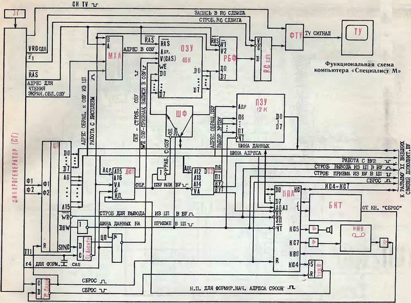
ЦП – центральный процессор, представляющий собой 8 – разрядный микропроцессор К580ВМ80; обеспечивает арифметическую и логическую обработку информации в соответствии с программой.
ЗГ – задающий генератор: формирует тактовую частоту импульсов 8 МГц, стабилизированную кварцевым генератором.
СГ – синхрогенератор: выполняет несколько функций; вырабатывает тактовые импульсы, обеспечивающие синхронное взаимодействие всех узлов ПК; формирует адреса обращения от синхрогенератора к экранной области ОЗУ при выводе очередного байта на экран (этот же адрес одновременно необходим для регенерации динамического ОЗУ); генерирует строчные и кадровые синхроимпульсы для синхронизации разверток телевизора – дисплея.
МХА – мультиплексор адреса ОЗУ; обеспечивает двухступенчатую коммутацию. Первая ступень коммутации осуществляет выбор адреса обращения к ОЗУ либо от центрального процессора, либо от синхрогенератора. Вторая ступень производит мультиплексирование старших и младших разрядов адреса обращения к ОЗУ, стробируемых соответственно сигналами RAS и CAS.
DC1 – дешифратор адреса первой ступени; дешифрует адреса обращения центрального процессора для выделения признака обращения к ОЗУ или группе, состоящей из ПЗУ внешних устройств (ВУ1, ВУ2). Кроме того, сам признак обращения к ОЗУ, как от микропроцессора, так и от синхрогенератора, в дешифраторе DC1 стробируется тактовыми импульсами F4 с целью получения сигнала CAS обращения к ОЗУ. Сигнал НП (начальный пуск), поступающий в DC1, вызывает формирование начального адреса работы ПК (после операции сброса), соответствующего адресу C000H.
DC2 – дешифратор адреса второй ступени; обеспечивает формирование сигналов, конкретизирующих разрешение обращения к одной из микросхем ПЗУ (П1...П6) или портам (ВУ1, ВУ2).
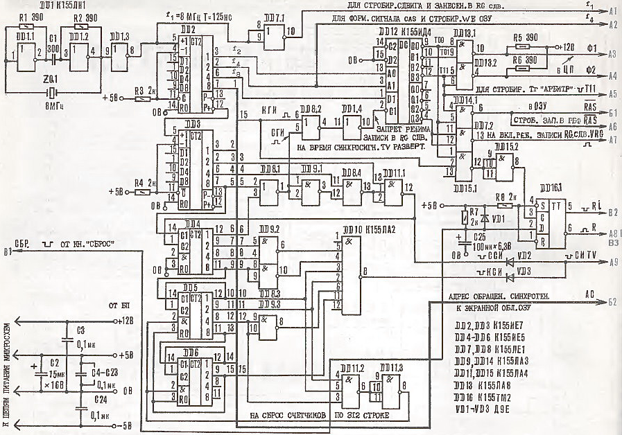
ПЗУ – постоянное запоминающее устройство объемом 12 кБайт; выполнено на микросхемах К573РФ5 и предназначено для хранения программного обеспечения: знакогенератора дисплея, основных программ обращения и работы с внешними устройствами, программы Монитор, интерпретатора языка Бейсик, тест – демонстрационной программы.
ШФ – шинный формирователь; обеспечивает двунаправленный обмен между ОЗУ и шинной данных.
РБФ – регистр буферный; осуществляет приём из экранной области ОЗУ очередного байта для последующей его передачи через RGсдв в дисплей.
RGсдв – регистр сдвига; обеспечивает приём из РБФ очередного байта параллельным кодом и последующую его побитную выдачу в дисплей.
ФTV – формирователь телевизионного сигнала для выдачи в дисплей – телевизор. Формирование сводится к смешиванию сигналов синхронизации телевизора с информационными сигналами, принимаемыми из регистра сдвига.
ППА – программируемый параллельный адаптер; построен на микросхеме К580ВВ55 и обеспечивает связь с внешними (по отношению к микропроцессору) устройствами: БКТ – блоком клавиатуры, НМЛ – накопителем на магнитной ленте (кассетный магнитофон), источником звуковых сигналов, Тг "Н. П." – триггером "начальный пуск".
Тг "Арбитр" - триггер; определяет, кому в текущий момент (машинный такт) предоставлено право работать с ОЗУ – центральному процессору или дисплею.
Управляет состоянием триггера сам микропроцессор. В тактах, когда он не обращается к ОЗУ, триггер "Арбитр" устанавливается в состояние, соответствующее работе ОЗУ с дисплеем. При этом происходит чтение экранной области ОЗУ по адресу, формируемому синхрогенератором.
Тг "Н. П." - триггер; по сигналу "сброс" устанавливается в состояние, обеспечивающее формирование сигнала "начальный пуск", который, в свою очередь, обеспечивает в DC1 формирование адреса начального обращения к программной области ПЗУ C000H. В исходное состояние этот триггер устанавливается уже программно через ППА DD45.
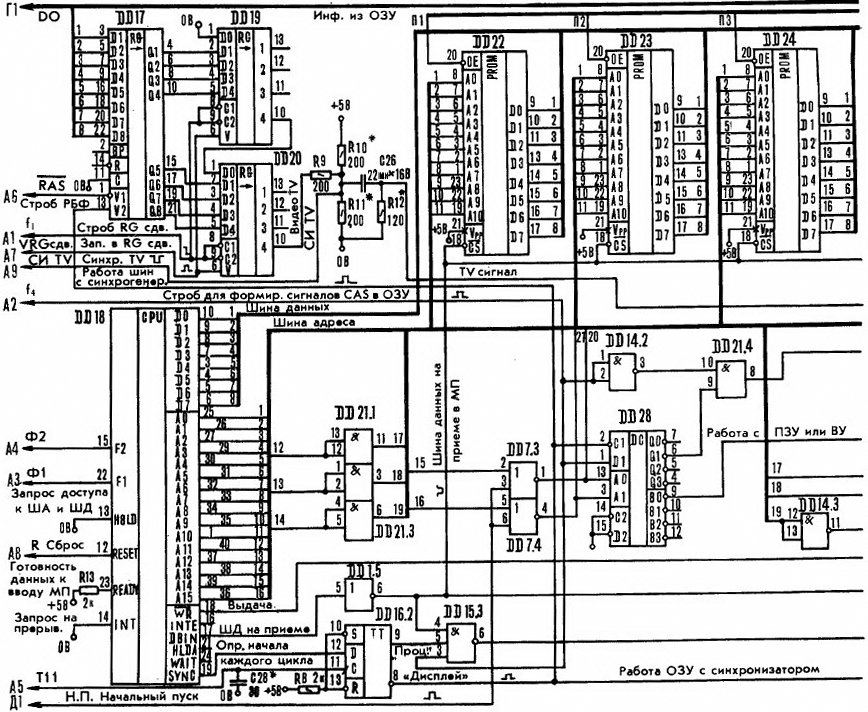
Работа логического блока. Основные узлы взаимодействуют между собой посредством трёх шин: 16 – разрядной адреса, 8 – разрядной данных и управления. ЦП К580ВМ80 тактируется импульсами частотой 2 МГц, вырабатываемыми синхрогенератором. Для упрощения схемы и конструкции интерфейс ППА (К580ВВ55) и внешние устройства адресуются как ячейки памяти. Функции синхрогенератора, счётчиков регенерации динамического ОЗУ и сканирования дисплея совмещены в одном устройстве. Цикл регенерации ОЗУ – 128 мкс.
Для отображения информации на экране – телевизора используется часть основной памяти ОЗУ. Это упрощает схему, но создает проблему разрешения конфликта процессора и дисплея при обращении к ОЗУ. Когда обращение процессора к ОЗУ отсутствует, контроллер дисплея (совокупность элементов, предназначенных для формирования изображения на экране телевизор) может считывать информацию из ОЗУ каждые 0,5 мкс. В конце цикла, содержащего 2 обращения к ОЗУ по одному и тому же адресу, происходит запись байта информации в регистр сдвига и последующая её передача на видеовход телевизора. Если же микропроцессор в каком – то цикле обращения к ОЗУ (для этого необходим интервал 500 нс.), тогда в зависимости от того, в каком цикле ОЗУ это произошло, информация для отображения, в случае необходимости, задерживается в буферном регистре РБФ на 500 нс. с последующей выдачей на экран. Но если в течение двух циклов микропроцессор не обращается к ОЗУ, то в РБФ записывается одна и та же информация из ОЗУ дважды, а переписывается в регистр сдвига только один раз.
Обращение к ОЗУ от микропроцессора подряд в течение двух циклов невозможно в соответствии с логикой работы самого микропроцессора. Это позволяет сделать работу процессора независимой от дисплея, и таким образом вывод на него не требует специальных затрат времени микропроцессора, что повышает производительность компьютера.
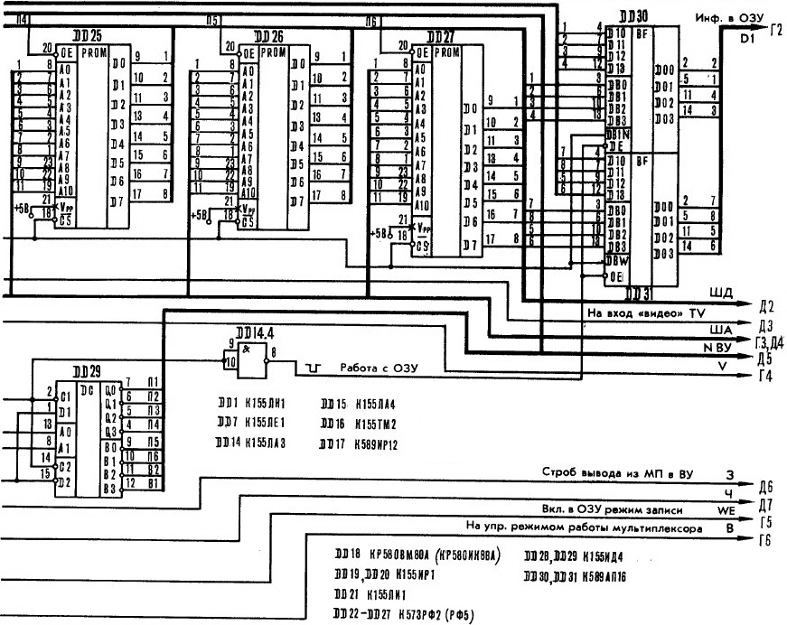
Для получения полного телевизионного сигнала, подаваемого на видеовход телевизора, в формирователе видеосигнала ФTV смешивается сигнал, снимаемый со сдвигового регистра, с импульсами, вырабатываемыми синхрогенератором. Период строчной синхронизации – 64 мкс., длительность гасящего импульса – 16 мкс., период кадровой развертки - 20 мс., длительность кадрового гасящего импульса – 3584 мкс.
Блок клавиатуры (БКТ) состоит из матрицы нормально разомкнутых контактов. Все функции клавиатуры (сканирование матрицы, защита от дребезга, формирование кодов символов и т. д.) реализованы программно. Также программным способом осуществляется связь с магнитофоном и генерация звуковых сигналов.
При использовании дополнительных периферийных БИС серии К580 (ВВ55, ВВ51, ВИ53) их подключают к соединителю внешних связей X1. В этом случае обеспечивается возможность подсоединения таких внешних устройств, как принтер, перфоратор, фотосчитыватель, АЦП, ЦАП.
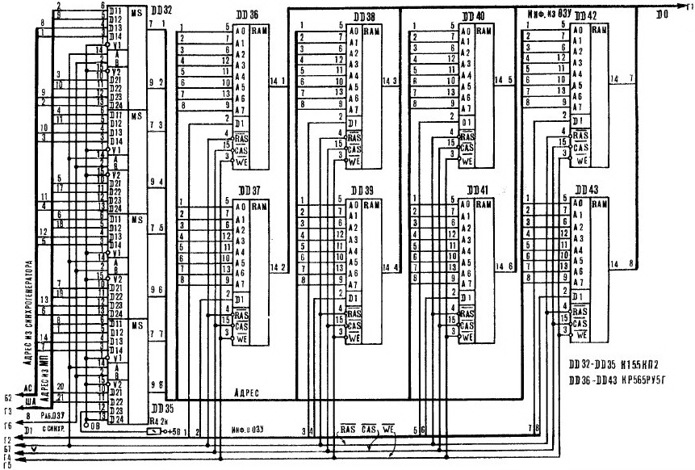
Задающий генератор (ЗГ), стабилизированный кварцем ZQ1 с резонансной частотой 8 МГц, собран на микросхеме DD1. Импульсы задающего генератора поступают на вход счётчика синхрогенератора (DD2...DD6), на выходах которого вырабатываются сигналы, используемые для адресации обращения к экранной области ОЗУ при регенерации изображения. Кроме этого, из этих сигналов с помощью логических элементов DD8...DD11 выделяются синхронизирующие и гасящие импульсы. Строчный синхроимпульс поступает с выхода микросхемы DD11.1, а кадровый синхроимпульс – с выхода DD10. Через диоды VD2 и VD3 они смешиваются с сигналом изображения, вырабатываемым регистром сдвига RGсдв.
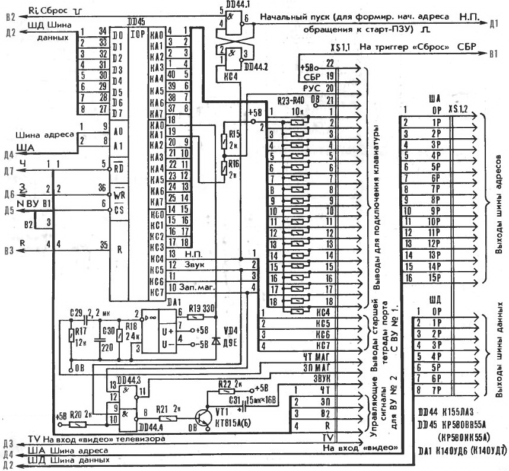
Резисторы R9...R11 определяют размах и форму видеосигнала. Кадровый и строчный гасящие импульсы через элементы DD8.2 и DD1.4 запрещают запись информации в регистры сдвига. Таким образом, в моменты передачи строчного и кадрового гасящих импульсов на выходе RG сдвига после восьми импульсов сдвига появляется уровень 0, что соответствует чёрному цвету на экране.
Узел, состоящий из микросхем DD13, DD14 служит для получения тактирующих импульсов Ф1 и Ф2 амплитудой 12 В, необходимых для работы микропроцессора, и сигнала RAS, управляющего работой ОЗУ и мультиплексора адреса МХА. По заднему фронту сигнала RAS происходит запись младших восьми бит адреса в адресный регистр микросхем памяти. Одновременно происходит переключение мультиплексора МХА, и в ОЗУ поступают старшие 8 бит адреса.
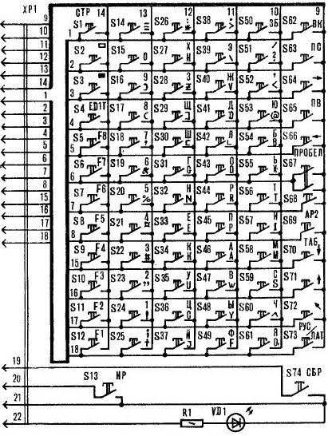
Временные диаграммы основных сигналов работы синхрогенератора ПК "Специалист - М" приведены на рисунках.
Диаграмма работы генератора тактов.
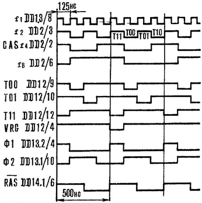
Диаграмма работы счётчика элементов - точек в строке на экране дисплея, формирование строчных гасящих и синхронизирующих синхроимпульсов (ССИ и СГИ).
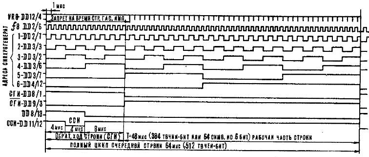
Диаграмма работы счётчика строк в кадре дисплея, формирование кадровых гасящих и синхронизирующих импульсов (КСИ и КГИ).
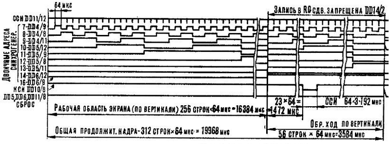
В зависимости от состояния триггера "Арбитр", выполненного на элементе DD16.2 микросхемы DD16, на ОЗУ поступает код адреса либо от процессора, либо от счётчиков синхрогенератора. Этот триггер вырабатывает сигнал ЦП ("проц.") длительностью 500 нс. В том случае, если на выводе 19 микропроцессора DD18 появляется сигнал SYNC, предваряющий такт обращения процессора к ОЗУ, и при этом отсутствует сигнал ЧТ ("чтение"), что означает начало цикла записи информации в ОЗУ, на выводе 6 элемента DD15.3 вырабатывается сигнал записи в ОЗУ (WE ОЗУ), совпадающий по времени с сигналом выборки ОЗУ (V) на выходе элемента DD21.4, входящего в состав дешифратора DC1.
Информация из ОЗУ поступает на шину данных (ШД) и обратно через шинный формирователь (ШФ), выполненный на микросхемах DD30 и DD31. Направление передачи определяется сигналом ЧТ, снимаемым с вывода 6 элемента DD1.5.
Сигнал "сброс" обрабатывается триггером "сброс" на элементе DD16.1. Длительность сигнала, поступающего с выхода на вход "сброс" микропроцессора и интерфейса кратна периоду кадровой развертки, то есть во много раз больше длительности пяти машинных циклов, что необходимо для надежного сброса микропроцессора. Действие сигнала "сброс" не нарушает регенерацию ОЗУ.
Выборка ПЗУ с интерфейсных микросхем обеспечивается дешифратором второй ступени DC2, выполненным на ИМС DD29, путём формирования сигналов П1…П6 и ВУ1, ВУ2. Каждому из этих сигналов отводится по 2 кБайта адресного пространства.
В модернизированном варианте "Специалиста - М" ОЗУ состоит из восьми микросхем КР565РУ5Г (DD36…DD43). Причём задействованы все выходы мультиплексоров DD32…DD35. Изменена также цепь формирования сигнала CAS для линейки микросхем ОЗУ. Остальные же схемные решения сохраняются прежними.
Следует, однако, отметить: несмотря на то, что объём памяти восьми микросхем ОЗУ составляет 64 кБайта, в распоряжении пользователя имеется только 48 кБайт. Неизменность конфигурации адресного пространства компьютера позволяет полностью сохранить программную совместимость с базовой моделью "Специалиста".
Расширить ОЗУ компьютера можно с помощью электронного квазидиска, но существует и другой путь, не требующий дополнительного программного обеспечения и значительных аппаратных затрат. Достаточно включить параллельно имеющейся линейке ОЗУ ещё 8 микросхем памяти, коммутируя программно или аппаратно сигнал CAS. Объём ОЗУ компьютера возрастает еще на 48 кБайт и в целом составит 96 кБайт.
Принцип построения клавиатуры в новом варианте микроЭВМ – прежний. Для опроса и определения нажатой кнопки служит та же подпрограмма (драйвер клавиатуры), "зашитая" в ППЗУ компьютера. Применение пассивной клавиатуры не исключает возможности подключения активной по типу промышленных ПЭВМ. Но для этого нужно иметь новый (программно совместимый) вариант Монитора.
Интерфейсный адаптер ППА, выполненный на микросхеме DD45, помимо обслуживания клавиатуры, выработки звуковых сигналов, связи с магнитофоном, обеспечивает работу узла начального пуска, в состав которого входит триггер "нач. пуск" на элементах DD44.1, DD44.2. По сигналу "сброс" триггер устанавливается в состояние, при котором сигнал «Н. П.» принимает значение логической 1. Поступая на вход дешифратора DC1, он обеспечивает формирование высокого логического уровня на пятнадцатом и шестнадцатом разрядах адресной шины. В результате происходит обращение к ППЗУ по адресу C000H.
Программа начинает свою работу с перехода на адрес C003H и программирования ППА на выдачу в разряд KC4 логического 0 (сигнала сброса триггера "нач. пуск"). К моменту сброса триггера микропроцессор уже хранит адрес очередного этапа работы ПК. В дальнейшем разряд RC4 порта «C» ППА может программироваться для любых целей произвольно, не влияя на состояние триггера "нач. пуск".
В микроЭВМ рекомендуем устанавливать разъём X2 типа ГРПМ6ТГ02 – соединитель системной магистрали, позволяющий подключать дополнительные внешние устройства (контроллер дисковода, квазидиск, принтер и т. д.). На этот разъём должны быть выведены шины адреса и данных, а также дополнительные шины для управления внешними устройствами ввода – вывода.
При подключении различных цепей к данному разъёму следует иметь чёткое представление об их назначении, поскольку даже незначительные ошибки могут привести к выходу из строя (микропроцессора, ПЗУ и т. д.). Функциональное назначение цепей компьютера, подсоединяемых к разъёму, приведено в таблице. В ней же представлена рекомендуемая распайка выводов внешнего разъёма ПК "Специалист - М".
Контакт |
Цепь |
Назначение |
Контакт |
Цепь |
Назначение |
|
А1 |
A0
|
Адресная шина |
Б3 |
D2
|
-//- |
|
А2 |
A1
|
-//- |
Б4 |
D3
|
-//- |
|
А3 |
A2
|
-//- |
Б5 |
D4
|
-//- |
|
А4 |
A3
|
-//- |
Б6 |
D5
|
-//- |
|
А5 |
A4
|
-//- |
Б7 |
D6
|
-//- |
|
А6 |
A5
|
-//- |
Б8 |
D7
|
-//- |
|
А7 |
A6
|
-//- |
А20 |
R
|
Сигнал "Сброс" |
|
А8 |
A7
|
-//- |
А21 |
ЧТ
|
Сигнал "Чтение" |
|
А9 |
A8
|
-//- |
А22 |
ЗП
|
Сигнал "Запись" |
|
А10 |
A9
|
-//- |
А23 |
ВУ2
|
Признак работы с ВУ2 |
|
А11 |
A10
|
-//- |
Б14 |
КС4
|
Разряд порта С4 ППА ВУ1 |
|
А12 |
A11
|
-//- |
Б15 |
КС5
|
Разряд порта С5 ППА ВУ1 |
|
А13 |
A12
|
-//- |
Б16 |
КС6
|
Разряд порта С6 ППА ВУ1 |
|
А14 |
A13
|
-//- |
Б17 |
КС7
|
Разряд порта С7 ППА ВУ1 |
|
А15 |
A14
|
-//- |
А29 |
+12 В
|
Выход источника питания +12 В |
|
А16 |
A15
|
-//- |
А30 |
+5 В
|
Выход источника питания +5 В |
|
Б1 |
D0
|
Шина данных |
Б30 |
-5 В
|
Выход источника питания -5 В |
|
Б2 |
D1
|
-//- |
Б31 |
0 В
|
Общий |
Самостоятельное подключение внешних устройств должно осуществляться в строгом соответствии с требованиями электрических, временных и нагрузочных характеристик микропроцессора КР580ВВ80А, причём нагрузка на любой его выход не должна превышать ток 1,9 мА, что примерно соответствует одному входу микросхем серии К155.
Рекомендуется осуществлять электрическое подсоединение дополнительных внешних устройств посредством микросхем серии К580 (например, К580ВВ55, К580ВВ51 и др.).
Программная совместимость "Специалиста - М" подразумевает прежнее распределение адресного пространства ПК. Все устройства ввода – вывода компьютера адресуются как ячейки памяти, что упрощает его аппаратную реализацию. Суммарный объём адресного пространства составляет 64 кБайта. Дешифрация адреса для формирования признаков обращения ко всем устройствам осуществляется в два этапа с помощью дешифраторов DC1 и DC2.
Первая ступень, реализуемая с помощью дешифратора DC1, обеспечивает формирование признака обращения к ОЗУ объёмом 48 кБайт, начиная с адреса 0000H по BFFFH. На оставшуюся часть пространства объёмом в 16 кБайт, начиная с адреса C000H по FFFFH, формируется обобщенный признак обращения к ПЗУ и внешним устройствам.
Вторая ступень, реализуемая с помощью дешифратора DC2, обеспечивает равномерное распределение адресного пространства объёмом в 16 кБайт (начиная с C000H по FFFFH) между восемью устройствами. Причём каждому из них отводится адресное пространство объёмом по 2 кБайта.
Первые шесть признаков П1…П6 отводятся для обращения к шести микросхемам ПЗУ DD22…DD27. Остальные два признака ВУ1 и ВУ2 (по 2 кБайта) отводятся для организации обращения к внутреннему интерфейсу ППА и внешним устройствам. Признак ВУ1 обеспечивает обращение к интерфейсу ППА, выполненному на микросхеме DD45 КР580ВВ55. Этот интерфейс обеспечивает взаимодействие со следующими устройствами: блоком клавиатуры, узлом выдачи звуковых сигналов, внешним накопителем на магнитной ленте (бытовым магнитофоном), формирователем сигнала "начальный пуск". Адресное пространство, выделённое для этого интерфейса, имеет объём 2 кБайта; рекомендуем использовать следующие адреса:
FFFCH - обращение к порту «А» ППА,
FFFDH - обращение к порту «В» ППА,
FFFEH - обращение к порту «С» ППА,
FFFFH - обращение к порту «РУС» ППА.
Таким образом, адресное пространство объёмом 2 кБайта, отведённое для интерфейса, используется недостаточно эффективно, однако это позволяет снизить аппаратные затраты в ПК.
Для признака ВУ2 также отведено 2 кБайта адресного пространства (начальный адрес F000H, конечный – F7FFH). Указанный признак внутри ПК не используется и вместе с другими сигналами системной магистрали выведен на соединитель внешних связей. Это обеспечивает возможность непосредственной адресации в программах пользователя при обращении к дополнительным внешним устройствам, подключаемым потребителям к ПК самостоятельно. Так, например, пользователь имеет возможность самостоятельно изготовить и подключить к ПК дешифратор адресного пространства третьей ступени, работающий под управлением разрешающего сигнала ВУ2. На выходе такого дешифратора можно получить до 2048:4=512 сигналов – признаков. При наличии соответствующих шинных формирователей, обеспечивающих достаточную нагрузочную способность, становится возможным подключать к ПК до 512 дополнительных ППА на микросхемах К580ВВ55.
В качестве другого примера можно указать на возможность подключения (с непосредственной адресацией при обращении) дополнительного ПЗУ объёмом 2 кБайта к разрешающему сигналу ВУ2. В качестве ПЗУ может быть использована микросхема К572РФ2 или К573РФ5. Схема распределения адресного пространства ПЭВМ "Специалист - М" приведена в таблице. В таблице в качестве примера ОЗУ пользователя загружено Бейсик - системой.
Адреса |
Устройство |
Примечание |
0000H...1FFFH |
ОЗУ пользователя |
Интерпретатор Бейсика |
2000H...254FH |
-//- |
Графический редактор к Бейсику |
2550H...260FH |
-//- |
Подпрограмма "CIRCLE" Бейсика |
2810H...7FFFH |
-//- |
Стек Бейсика и программы пользователя, написанные на Бейсике |
8000H...800FH |
-//- |
Служебные ячейки подпрограмм графики Бейсика |
8010H...8ЕFH |
-//- |
Область подпрограмм, вызываемых Бейсиком по директиве |
8F00H...8FFFH |
Служебная область ОЗУ |
Служебные ячейки Загрузчика и Монитора |
9000H...BFFFH |
Экранная область ОЗУ |
Объём 12 кБайт (384 х 256 точек) |
C000H...C4FFH |
ПЗУ №1 |
Загрузчик |
C500H...C7FFH |
-//- |
Знакогенератор КОИ - 7 |
C800H...CFFFH |
ПЗУ №2 |
Монитор |
D000H...D7FFH |
ПЗУ №3 |
Знакогенератор КОИ - 8 и вспомогательная программа Загрузчика |
D800H...DFFFH |
ПЗУ №4 |
Драйверы внешних устройств |
E000H...E7FFH |
ПЗУ №5 |
-//- |
E800H...EFFFH |
ПЗУ №6 |
-//- |
F000H...F7FFH |
ВУ2 |
Внешние устройства (программатор, принтер, квазидиск и т. д.) |
F800H...FFFFH |
ВУ1 |
Обслуживание клавиатуры, выход звука, связь с магнитофоном, НП |
Блок питания. В микроЭВМ "Специалист - М" можно использовать любой блок питания, имеющий на выходе следующие параметры: +5 В / 1,5 А, +12 В / 0,15 А, -5 В / 0,02 А. Вариант такого источника питания – на рисунке.
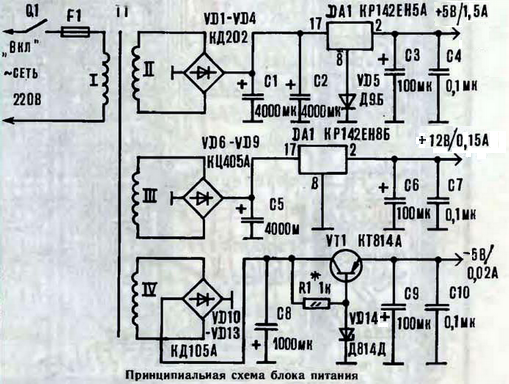
Силовой трансформатор Т1 – готовый, мощностью 20…25 Вт, обеспечивающий под нагрузкой следующие напряжения на обмотках: II - 9 В, III - 14…15 В, IV - 9 В.
Настройки блок питания не требует. Отметим лишь некоторые его особенности. Диод VD5 необходим для получения на выводе ИМС DA1 напряжения 5…5,3 В, поскольку интегральные стабилизаторы КР142ЕН5А выпускаются, как показывает практика, с выходным напряжением 4,8…4,9 В. А с учётом падения напряжения на соединительных проводах, входном разъёме и на плате компьютера оно может составить всего 4,7 В. Этого напряжения недостаточно для нормальной работы ТТЛ – микросхем.
Для более точной подгонки выходного напряжения параллельно диоду VD5 рекомендуется включить резистор сопротивлением 10…100 Ом.
Напряжение -5 В на выходе стабилизатора (VT1) устанавливают подбором величины резистора R1.
В качестве выпрямительных приборов VD1…VD4 можно использовать любые мощные кремниевые диоды на ток не менее 3 А. Диоды VD6…VD13 - любые кремниевые на ток 0,3…0,4 А (КД105 – с индексом А или Б).
Микросхема DA1 устанавливается на радиаторе с площадью рассеяния около 100 см2, а DA2 - на радиаторе с площадью 10 см2.
Печатная плата. Компьютер "Специалист - М" собран на двухсторонней печатной плате размером 246 Х 156 мм. (см. картинки - все картинки кликтабельны), изготовленной из фольгированного стеклотекстолита толщиной 1,5…2 мм.
Сначала собирают синхрогенератор, проверяют наличие синхроимпульсов, их смеси на выходе "видео". Затем устанавливают на плату микросхемы мультиплексоров, ОЗУ и порт, обслуживающий клавиатуру.
{kind=link}
{kind=link}
{kind=link}
Для самостоятельного заказа изготовления печатной платы ПК "Специалист - М" (изображение ниже) можно скачать гербер файлы из таблице внизу данной страницы. В печатной плате имеется множество ошибок, которые будут в скором времени исправлены.
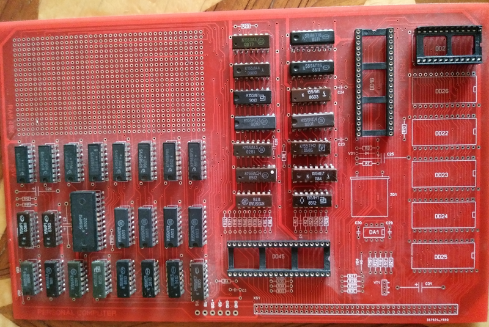
Павел Рябцев развёл ещё одну печатную плату ПК "Специалист - М" (изображение ниже) со встроенными контроллерами цвета и SD карты (Vinxru), и адаптером PS/2 клавиатуры (Vinxru). Ниже из таблицы (SpMG2.rar) можно скачать архив гербер-файлов для производства печатной платы.
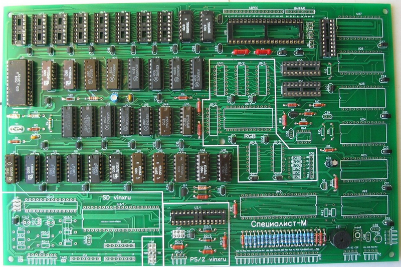
Клавиатура. Драйвер клавиатуры приближён к стандартному набору клавиш, включая: <SHIFT> - совместное нажатие вызывает набор спецсимволов: + ! “ # ¤ % & ( ) * и т. д.; <CONTROL> - совместное нажатие вызывает набор управляющих кодов: 00H…1FH; <LOCK> - переключение регистра ВЕРХНИЙ / НИЖНИЙ (в частности РУС / ЛАТ), работает в триггерном режиме. Расположение этих клавиш в матрице клавиатуры приведено на рисунке.
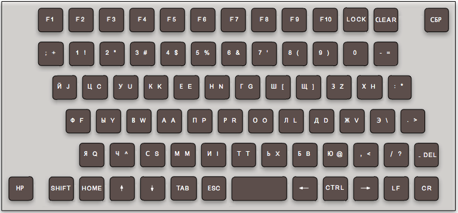
Печатные платы. На данный момент существует три фотографии печатных плат ПК "Специалист - М". Но если внимательно взглянуть на них, то можно разглядеть существенные отличия от представленных рисунков печатных плат из журнала "Моделист - конструктор" (см. выше). Фотографию третьей платы предоставил Alex_LG.
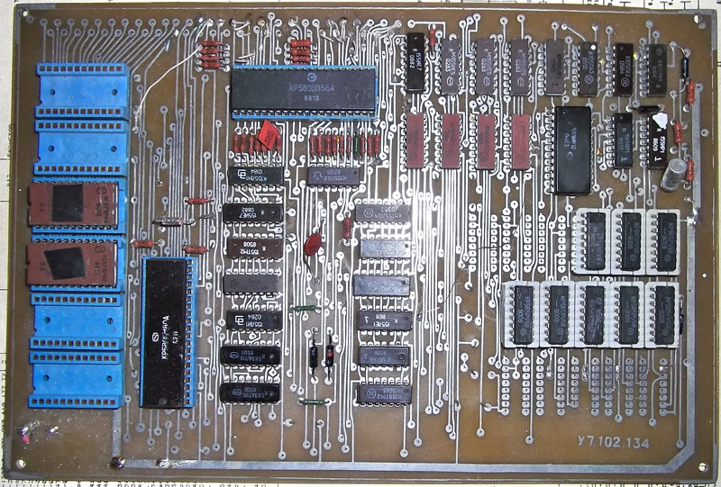
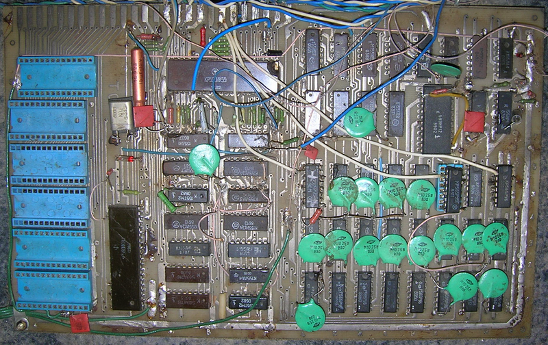
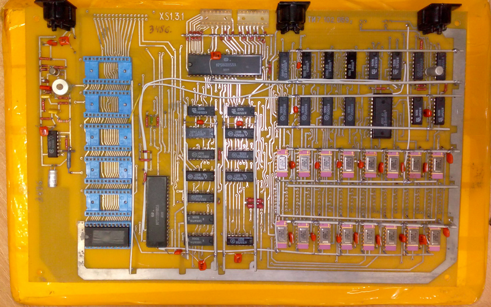
Ещё одна фотография собранного компьютера от val_dp.
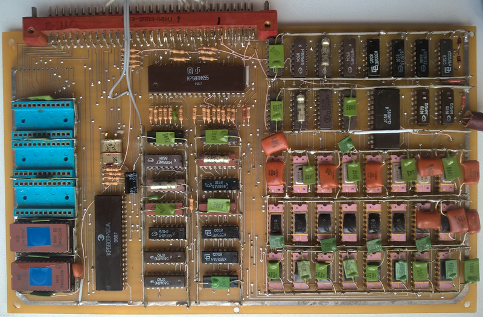
| Назначение | Схема | Статья |
|---|---|---|
Схема ПК "Специалист-М" от Fifan'а |
||
Клавиатура |
- |
|
Гербер файлы ПП
ПК "Специалист-М" |
||
Гербер файлы ПП
ПК "Специалист-М" |
{kind=link}